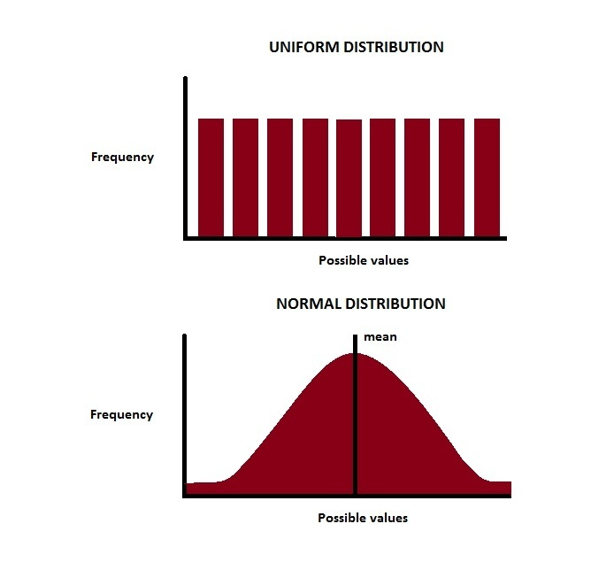

PyTorch 기본 사용법[1/2]
개요
기본적으로 PyTorch를 사용하면서 자주 쓰게 되는 메소드에 대해서 설명하고자 합니다. 기본적으로 PyTorch 도큐먼트 내용이 잘 나와있습니다. 해당 도큐먼트를 기반으로 쉽게 설명을 위해 포스팅합니다. 현재 PyTorch 0.3.0 도큐먼트 기반으로 작성합니다.
기본사용법 시리즈
- PyTorch 기본사용법 [1/2] (현재글)
- PyTorch 기본사용법 [2/2]
텐서 생성
torch.Tensor()
torch.Tensor()는 여러 매개변수로 오버로딩이 되어있습니다. 사이즈를 넘길 경우 해당하는 사이즈의 Tensor를 생성해주며 배열을 넣을 경우 해당하는 배열의 수를 갖는 Tensor를 생성합니다.
x = torch.Tensor(2, 3)
'''
1.00000e-29 *
0.0000 -2.5244 0.0000
-2.5244 0.0000 0.0000
[torch.FloatTensor of size 2x3]
'''
y = torch.Tensor([[1, 2], [3, 4]])
'''
1 2
3 4
[torch.FloatTensor of size 2x2]
'''
torch.rand(size)
torch.rand()는 텐서를 랜덤하게 생성하는 메소드이며, 0이상 1미만의 수로 사이즈 만큼 생성합니다.
x = torch.rand(2,3)
'''
0.4218 0.2046 0.8776
0.1623 0.6642 0.5808
[torch.FloatTensor of size 2x3]
'''
매개변수로 넘긴는 차원 수 만큼 FloatTensor로 균등분포(uniform distribution)로 랜덤하게 생성되는 메소드입니다.
torch.randn(size)
torch.randn()도 텐서를 랜덤하게 생성하는 메소드이며 0를 평균으로 갖는 수로 사이즈 만큼 생성합니다. 여기서 다른 점은 torch.rand()와는 다르게 정규분포(normal distribution)으로 Tensor를 생성합니다.
x = torch.randn(2,3)
'''
-0.9745 -1.7317 0.1979
-1.7215 -1.0405 0.2917
[torch.FloatTensor of size 2x3]
'''
Uniform distribution과 Normal distribution의 차이를 알 수 있는 이미지를 보시면 쉽게 이해하실 수 있으실겁니다.

이미지 출처 : quora.com
torch.randperm(n)
torch.randperm()은 0부터 n-1만큼 배열을 무작위로 섞은 Tensor를 생성합니다.
x = torch.randperm(5)
'''
3
0
4
2
1
[torch.LongTensor of size 5]
'''
torch.zeros(size)
torch.zeros()는 size만큼의 차원을 가진 Tensor를 0으로 채워서 생성해주는 메소드입니다.
x = torch.zeros(2,3)
'''
0 0 0
0 0 0
[torch.FloatTensor of size 2x3]
'''
torch.ones(size)
torch.ones()는 그럼 무엇일까요? 당연히 size만큼의 차원을 가진 Tensor를 1로 채워서 생성해주는 메소드입니다. 쉽죠?
x = torch.ones(2,3)
'''
1 1 1
1 1 1
[torch.FloatTensor of size 2x3]
'''
torch.arange(start, end, step)
torch.arange()는 start이상 end미만의 수로 step만큼의 수만큼 건너뛰는 Tensor를 생성해주는 역할을 합니다.
x = torch.arange(0, 10, step=2)
'''
0
2
4
6
8
[torch.FloatTensor of size 5]
'''
즉, 원하는 숫자 범위에서 step만큼 일정한 간격을 두는 데이터를 만들 때 사용하면 좋겠죠? 참고로 마지막으로 남아 떨어지지 않는 수는 생성하지 않는 다는 것을 명심 하셔야 될것같습니다.
torch.linspace(start, end, steps)
torch.linspace()하고 torch.arange()하고의 차이를 헷갈리시는 분들도 계실 겁니다. torch.linspace()는 start하고 end사이의 수로 steps수 만큼 일정한 간격을 갖는 수를 생성해주는 역할을 합니다.
x = torch.linspace(0, 10, steps=8)
'''
0.0000
1.4286
2.8571
4.2857
5.7143
7.1429
8.5714
10.0000
[torch.FloatTensor of size 8]
'''
Numpy타입과 Tensor타입의 호환
torch.from_numpy(x)
torch.from_numpy(x)는 numpy로 만든 데이터를 PyTorch에서 사용이 가능한 Tensor로 변환해주는 메소드입니다.
numpy_data = np.ndarray(shape=(2,2), dtype=int, buffer=np.array([1,2,3,4]))
tensor_data = torch.from_numpy(numpy_data)
Tensor.numpy()
Tensor.numpy()는 Tensor 타입의 데이터를 numpy 타입의 데이터로 바꾸는 메소드입니다.
numpy_data = tensor_data.numpy()
그 외
Tensor.cuda()
Tensor.cuda()는 GPU연산을 지원하는 디바이스에서 GPU연산용으로 변환하기 위한 메소드입니다. 단, 사용시 torch.cuda.is_available()로 디바이스가 GPU연산이 가능한지 확인하고 사용할 수 있도록 하는 것이 좋습니다.
x = torch.Tensor(2,3)
if torch.cuda.is_available():
x = x.cuda()
Tensor.size()
Tensor.size()는 해당하는 텐서의 사이즈를 확인할 수 있는 메소드입니다.
x = torch.Tensor(2,3)
x.size()
'''
torch.Size([2, 3])
'''
Tensor.size(n-dim)에 n-dim의 매개변수로 차원의 인덱스를 넘겨주면 해당하는 차원의 크기를 알아올 수도 있습니다.
마치며
기본적으로 PyTorch에서 자주 쓰는 메소드들에 대해서 알아 보았습니다. 이것 외에도 Tensor끼리 나누고 붙이고하는 메소드나 차원을 줄이고하는 메소드들에 대해서는 다음시간에 알아보도록 하겠습니다. 조금이나마 모두에게 도움이 되었으면 좋겠습니다. 감사합니다.